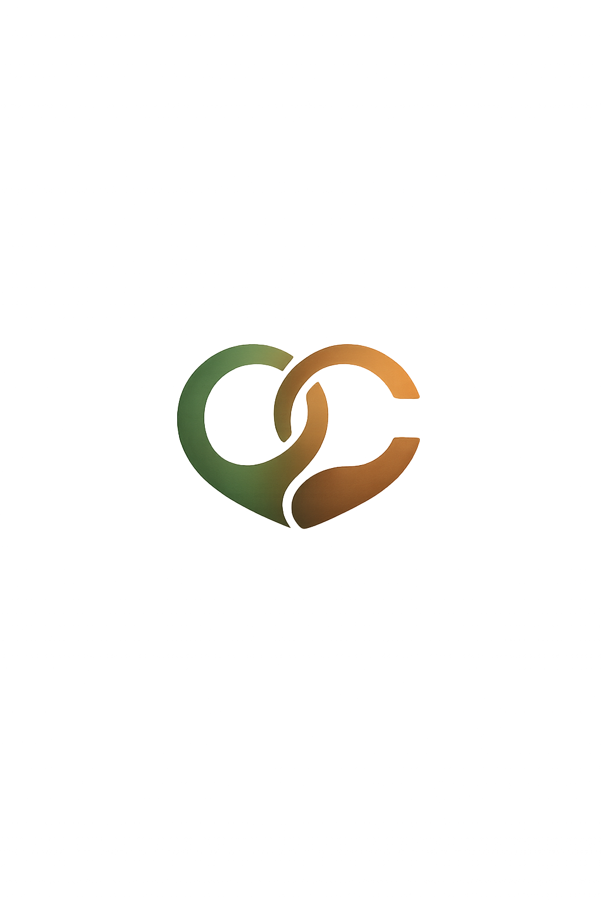

CRUCEO DescargarUn Cruceo no se inventa. Se vive: una mirada, una sonrisa o esa intuición de que algo acaba de pasar.
Porque a veces dos personas conectan sin decir una sola palabra.
No dejes que ese Cruceo se pierda.
Os mostramos vuestros perfiles para confirmar.
Solo si ambos queréis, comienza la conversación.